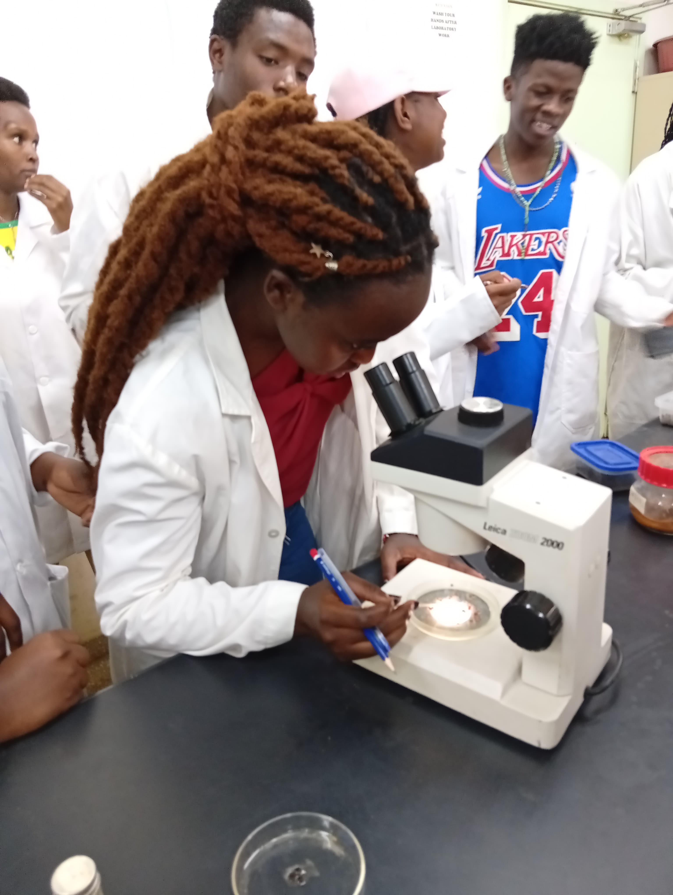

Education
- BSc. Environmental Science, Jomo Kenyatta University of Agriculture and Technology (JKUAT) (2025 to present)
- Kenya Certificate of Secondary Education (KCSE), Kereri Girls High School (Completed 2024)
Skills and Competencies
- Microsoft Word (advanced document formatting)
- Microsoft Excel & PowerPoint
- Geographic Information Systems (GIS) & Remote Sensing
- Ecological field sampling, plant diversity monitoring & water quality testing
- HTML5, CSS3 & Relational Database Basics (SQLite)
Research Interests
I am passionate about wetland and freshwater ecosystem conservation, invasive species management, soil and water quality assessment, and using GIS and remote sensing to support sustainable environmental planning.
Academic Projects and Certifications
| Project or Certificate | Year | What I learned |
|---|---|---|
| Field Research Assistant (JKUAT Farm & Campus) | 2026 | Plant diversity surveys, invasive species tracking, soil/water sampling, and technical reporting |
| ICS 2216 Applied Computing Portfolio & Database Lab | 2026 | Building responsive multipage websites with HTML/CSS and designing relational SQLite databases |